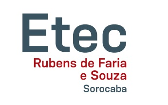

Histórico
SENAI - Serviço Nacional de Aprendizagem industrial - Ary Torres - São Paulo

- Eletricista de manutenção eletroeletrônica(antigo Reparador de Equipamentos Eletrônicos)
Ainda no último ano do antigo primeiro grau, hoje chamado de ensino fundamental, ingressei em um curso profissionalizante da instituição SENAI - Serviço Nacional de Aprendizagem industrial, unidade de Santo Amaro - São Paulo - SP, o curso escolhido foi "Reparador de equipamentos eletrônicos", e que hoje atende pelo nome de Eletricista de manutenção eletroeletrônica.
ETEC - Escolas técnicas estaduais - Rubens de Farias e Souza - Sorocaba

- Técnico em Eletrotécnica
Após o término da graduação de segundo grau, hoje conhecido como: ensino médio e ja atuante na área de manutenção industrial, iniciei esse curso, buscando aprimorar e extender os conhecimentos adquiridos.
SENAI - Serviço Nacional de Aprendizagem industrial - Gaspar Ricardo Júnior - Sorocaba
- Técnico em Mecatrônica
Já mais experiente na área de manutenção elétrica, busquei por mais conhecimento e também pretendendo expandir a área de atuação, cursei Técnico em Mecatrônica no instituto SENAI de Sorocaba.
FATEC - Faculdade de tecnologia de Sorocaba - Faculdade de Tecnologia José Crespo Gonzales - Sorocaba

- Tecnólogo em Análise e Desenvolvimento de Sistemas.
Com carreira já solidificada na área de manutenção, resolvi ir em busca de conhecimentos mais abrangentes, que permeasse a área de atuação profissional(manutenção eletrônica) e que ao mesmo tempo contemplasse uma área de gosto pessoal(tecnologia da informação), diante desse anseio, procurei uma instituição que é destaque nessa área na região e que ao mesmo tempo fornece o curso esperado de forma gratuita. Hoje sou aluno cursante de Análise e Desenvolvimento de Sistema na FATEC de Sorocaba.